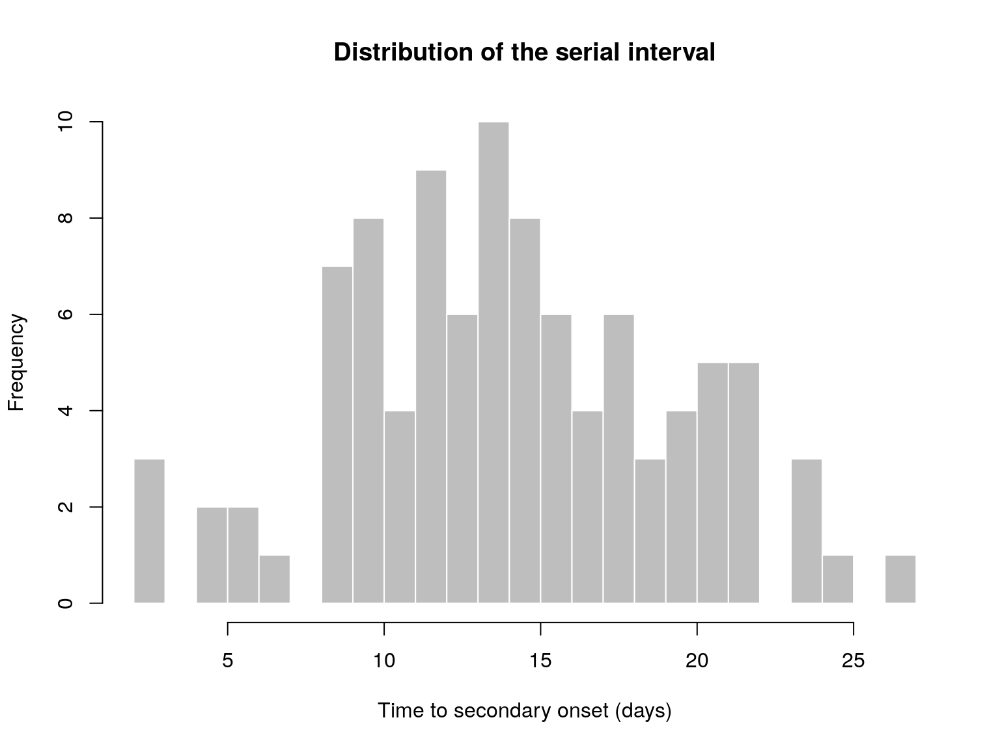

To install the current stable, CRAN version of the package, type:
install.packages("epicontacts")To benefit from the latest features and bug fixes, install the development, github version of the package using:
devtools::install_github("reconhub/epicontacts")Note that this requires the package devtools installed.
What does it do?
The main features of the package include:
epicontacts: a new S3 class for storing linelists and contacts datamake_epicontacts: a constructor for the newepicontactsclassget_id: access unique IDs in anepicontactswith various optionsget_pairwise: extract attributes of record(s) in contacts database using information provided in the linelist data of anepicontactsobject.get_degree: access degree of cases inepicontactswith various optionsx[i,j,contacts]: subset anepicontactsobject by retaining specified casesthin: retains matching cases in linelist / contactssummary: summary forepicontactsobjectsplot: plot forepicontactsobjects; various types of plot are available; default tovis_epicontactsvis_epicontacts: plot anepicontactsobject usingvisNetworkas.igraph.epicontacts: create anigraphobject from an epicontacts objectget_clusters: assign clusters and corresponding cluster sizes to linelist of an epicontacts object (clusters being groups of connected individuals/nodes).subset_clusters_by_id: subset anepicontactsobject based on a IDs of cases of interest.subset_clusters_by_size: subset anepicontactsobject based on size(s) of clusters (clusters being groups of connected individuals/nodes).graph3D: 3D graph from anepicontactsobject.
Resources
Vignettes
An overview of epicontacts is provided below in the worked example below. More detailed tutorials are distributed as vignettes with the package:
vignette("overview", package="epicontacts")
vignette("customize_plot", package="epicontacts")
vignette("epicontacts_class", package="epicontacts")Websites
The following websites are available:
The official epicontacts website, providing an overview of the package’s functionalities, up-to-date tutorials and documentation:
http://www.repidemicsconsortium.org/epicontacts/The epicontacts project on github, useful for developers, contributors, and users wanting to post issues, bug reports and feature requests:
http://github.com/reconhub/epicontactsThe epicontacts page on CRAN:
https://CRAN.R-project.org/package=epicontacts
Getting help online
Bug reports and feature requests should be posted on github using the issue system. All other questions should be posted on the RECON forum:
http://www.repidemicsconsortium.org/forum/
A quick overview
The following worked example provides a brief overview of the package’s functionalities. See the vignettes section for more detailed tutorials.
Obtaining an epicontacts object
epicontacts need two types of data:
a linelist, i.e. a spreadsheet documenting cases where columns are variables and rows correspond to unique cases
a list of edges, defining connections between cases, identified by their unique identifier
There does not need to be an one-to-one correspondance between cases documented in the linelist and those appearing in the contacts. However, links will be made between the two sources of data whenever unique identifiers match. This will be especially handy when subsetting data, or when characterising contacts in terms of ‘node’ (case) properties.
We illustrate the construction of an epicontacts using contact data from a Middle East Respiratory Syndrom coronavirus (MERS CoV) from South Korea in 2015, available as the dataset mers_korea_2015 in the package outbreaks.
library(outbreaks)
library(epicontacts)
names(mers_korea_2015)
#> [1] "linelist" "contacts"
dim(mers_korea_2015$linelist)
#> [1] 162 15
dim(mers_korea_2015$contacts)
#> [1] 98 4
x <- make_epicontacts(linelist = mers_korea_2015$linelist,
contacts = mers_korea_2015$contacts,
directed = TRUE)
x
#>
#> /// Epidemiological Contacts //
#>
#> // class: epicontacts
#> // 162 cases in linelist; 98 contacts; directed
#>
#> // linelist
#>
#> # A tibble: 162 × 15
#> id age age_class sex place_infect reporting_ctry
#> <chr> <int> <chr> <fctr> <fctr> <fctr>
#> 1 SK_1 68 60-69 M Middle East South Korea
#> 2 SK_2 63 60-69 F Outside Middle East South Korea
#> 3 SK_3 76 70-79 M Outside Middle East South Korea
#> 4 SK_4 46 40-49 F Outside Middle East South Korea
#> 5 SK_5 50 50-59 M Outside Middle East South Korea
#> 6 SK_6 71 70-79 M Outside Middle East South Korea
#> 7 SK_7 28 20-29 F Outside Middle East South Korea
#> 8 SK_8 46 40-49 F Outside Middle East South Korea
#> 9 SK_9 56 50-59 M Outside Middle East South Korea
#> 10 SK_10 44 40-49 M Outside Middle East China
#> # ... with 152 more rows, and 9 more variables: loc_hosp <fctr>,
#> # dt_onset <date>, dt_report <date>, week_report <fctr>,
#> # dt_start_exp <date>, dt_end_exp <date>, dt_diag <date>,
#> # outcome <fctr>, dt_death <date>
#>
#> // contacts
#>
#> # A tibble: 98 × 4
#> from to exposure diff_dt_onset
#> <chr> <chr> <fctr> <int>
#> 1 SK_14 SK_113 Emergency room 10
#> 2 SK_14 SK_116 Emergency room 13
#> 3 SK_14 SK_41 Emergency room 14
#> 4 SK_14 SK_112 Emergency room 14
#> 5 SK_14 SK_100 Emergency room 15
#> 6 SK_14 SK_114 Emergency room 15
#> 7 SK_14 SK_136 Emergency room 15
#> 8 SK_14 SK_47 Emergency room 16
#> 9 SK_14 SK_110 Emergency room 16
#> 10 SK_14 SK_122 Emergency room 16
#> # ... with 88 more rows
class(x)
#> [1] "epicontacts"
summary(x)
#>
#> /// Overview //
#> // number of unique IDs in linelist: 162
#> // number of unique IDs in contacts: 97
#> // number of unique IDs in both: 97
#> // number of contacts: 98
#> // contacts with both cases in linelist: 100 %
#>
#> /// Degrees of the network //
#> // in-degree summary:
#> Min. 1st Qu. Median Mean 3rd Qu. Max.
#> 0.00 1.00 1.00 1.01 1.00 3.00
#>
#> // out-degree summary:
#> Min. 1st Qu. Median Mean 3rd Qu. Max.
#> 0.00 0.00 0.00 1.01 0.00 38.00
#>
#> // in and out degree summary:
#> Min. 1st Qu. Median Mean 3rd Qu. Max.
#> 1.000 1.000 1.000 2.021 1.000 39.000
#>
#> /// Attributes //
#> // attributes in linelist:
#> age age_class sex place_infect reporting_ctry loc_hosp dt_onset dt_report week_report dt_start_exp dt_end_exp dt_diag outcome dt_death
#>
#> // attributes in contacts:
#> exposure diff_dt_onsetIn practice, the linelist and contacts will usually be imported from a text file (e.g. .txt, .csv) or a spreadsheet (e.g. .ods, .xls) using usual import functions (e.g. read.table, read.csv, gdata::read.xls).
Simple analyses
First, we plot the epicontacts object:
plot(x, selector = FALSE)We can look for patterns of contacts between genders:
plot(x, "sex", col_pal = spectral)There is no obvious signs of non-random mixing patterns, but this is worth testing. The function get_pairwise is particularly useful for this. In its basic form, it reports nodes of attributes for all contacts. For instance:
get_pairwise(x, attribute = "sex")
#> [1] "M -> M" "M -> F" "M -> F" "M -> M" "M -> F" "M -> M" "M -> M"
#> [8] "M -> F" "M -> F" "M -> F" "M -> M" "M -> M" "M -> F" "M -> F"
#> [15] "M -> F" "M -> M" "M -> F" "M -> M" "M -> F" "M -> M" "M -> M"
#> [22] "M -> M" "M -> M" "M -> M" "M -> M" "M -> M" "M -> M" "M -> M"
#> [29] "M -> F" "M -> M" "M -> F" "M -> M" "F -> F" "M -> F" "M -> F"
#> [36] "M -> F" "M -> M" "M -> F" "M -> M" "M -> M" "M -> F" "F -> M"
#> [43] "M -> M" "M -> M" "M -> M" "M -> F" "M -> F" "M -> F" "M -> M"
#> [50] "M -> F" "M -> M" "F -> M" "M -> M" "M -> F" "M -> M" "M -> F"
#> [57] "M -> F" "M -> M" "M -> M" "M -> M" "M -> M" "M -> M" "M -> M"
#> [64] "M -> F" "M -> F" "F -> M" "M -> M" "M -> M" "M -> M" "M -> M"
#> [71] "M -> M" "M -> M" "M -> F" "M -> F" "M -> M" "M -> M" "M -> F"
#> [78] "M -> F" "M -> M" "M -> F" "M -> M" "M -> F" "F -> M" "M -> F"
#> [85] "F -> F" "M -> F" "M -> M" "M -> M" "M -> M" "M -> M" "M -> M"
#> [92] "M -> F" "M -> M" "M -> M" "M -> F" "M -> F" "M -> M" "M -> M"However, one can specify the function to be used to compare the attributes of connected nodes; for instance:
sex_tab <- get_pairwise(x, attribute = "sex", f = table)
sex_tab
#> values.to
#> values.from F M
#> F 2 4
#> M 38 54
fisher.test(sex_tab)
#>
#> Fisher's Exact Test for Count Data
#>
#> data: sex_tab
#> p-value = 1
#> alternative hypothesis: true odds ratio is not equal to 1
#> 95 percent confidence interval:
#> 0.06158088 5.26628732
#> sample estimates:
#> odds ratio
#> 0.712926Indeed, there are no patterns of association between genders. We can also use this function to compute delays between dates. For instance, to get the distribution of the serial interval (delay between primary and secondary onset):
si <- get_pairwise(x, attribute = "dt_onset")
si
#> [1] 10 13 14 14 15 15 15 16 16 16 17 18 18 18 18 19 19 19 20 20 20 21 21
#> [24] 22 22 22 24 24 24 25 17 15 2 7 9 10 14 15 14 22 15 5 9 27 10 12
#> [47] 14 17 9 14 14 6 6 9 9 9 10 12 13 21 5 14 16 20 21 13 3 11 11
#> [70] 12 12 12 12 13 13 14 15 15 16 18 21 22 12 11 9 3 10 10 10 10 11 12
#> [93] 12 13 14 16 17 18
summary(si)
#> Min. 1st Qu. Median Mean 3rd Qu. Max.
#> 2.00 11.00 14.00 14.47 18.00 27.00
hist(si, col = "grey", border = "white", nclass = 30,
xlab = "Time to secondary onset (days)",
main = "Distribution of the serial interval")
Contributors (by alphabetic order):
- Finlay Campbell
- Thomas Crellen
- Thibaut Jombart
- Nistara Randhawa
- Bertrand Sudre
See details of contributions on:
https://github.com/reconhub/epicontacts/graphs/contributors
Contributions are welcome via pull requests.
Please note that this project is released with a Contributor Code of Conduct. By participating in this project you agree to abide by its terms.
Maintainer: VP Nagraj (vpnagraj@virginia.edu)